2011 After Burn Report
Welcome
While BRC Census has been producing reports since 2002, it is hard to compare recent data with reports from earlier years (before 2013) because of important differences in methodology, from a convenience sample of self-selected Census takers on-playa to a weighted online survey conducted after the Man burns.
What is your age?

What is the highest level of education you have completed?
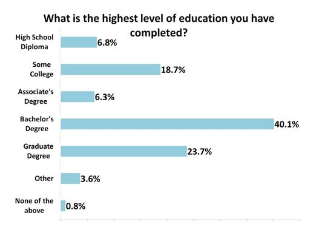
Which sex was assigned to you at birth?

What is your current gender?
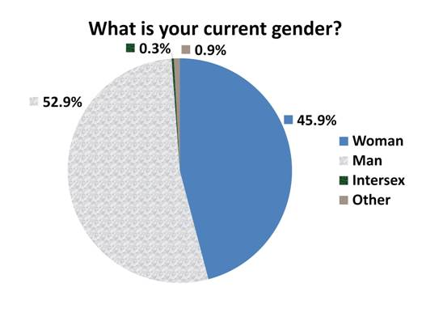
Are you eligible to vote in the USA?
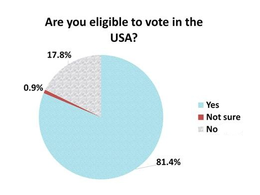
How often do you vote?
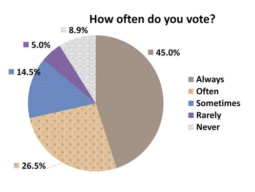
Are you married?
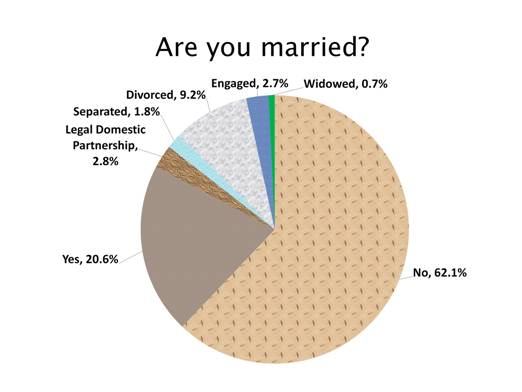
What was your income in 2010 before taxes?
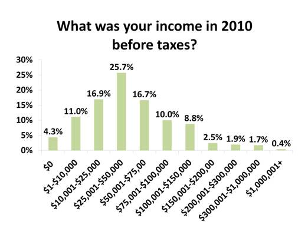
I got here on:
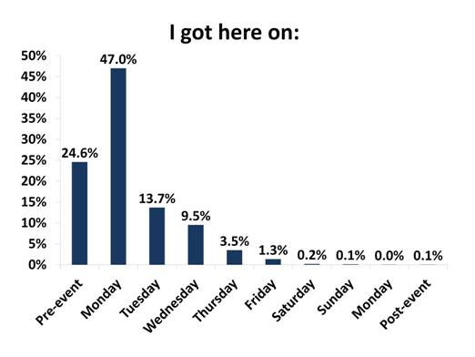
Which years did you attend Burning Man?
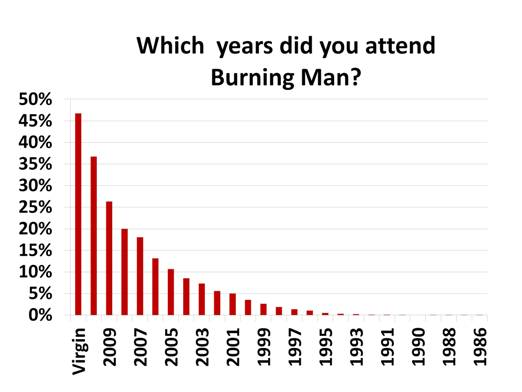
I'm leaving on:

If you drove, where did you drive from?

Have you ever fibbed or outright lied to anyone about going to Burning Man because you were ashamed?
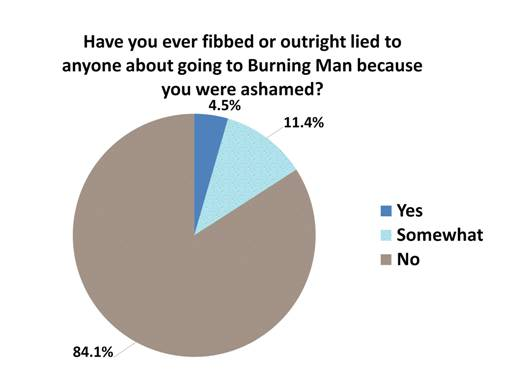
Have you learned something useful at Burning Man?

Do you sometimes visit/reside in Nevada, other than for Burning Man?

Will you be vising any parks or recreation areas on your way to or from Burning Man?

Did you bring an RV or camper- trailer to Burning Man this year?

I wish there were a place to buy supplies on the playa
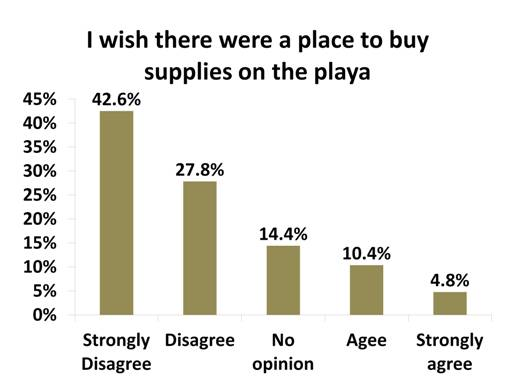
Is your camp a theme camp?
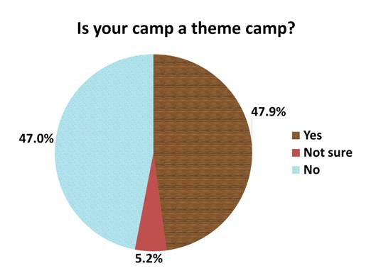
How did you get to Blackrock this year?

Have you volunteered with Burning Man since last year’s burn?
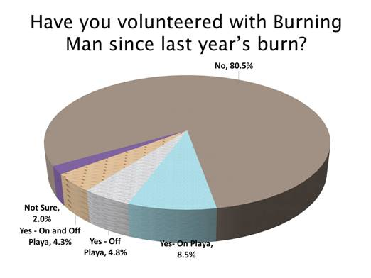